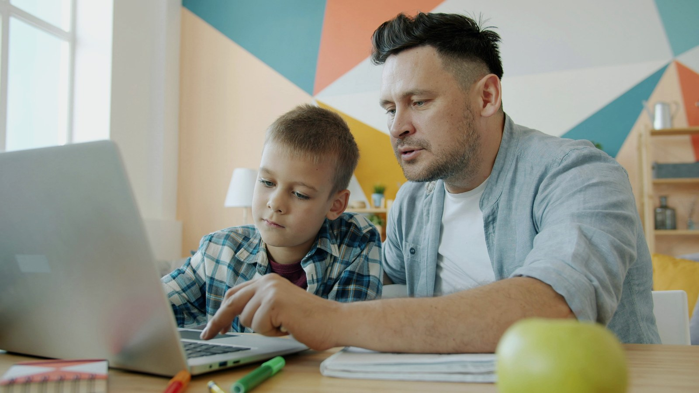

Medidas de Ciberseguridad para Familias en Puerto Rico
Cybersecurity Measures for Families in Puerto Rico
2026-03-30 • 3 min • Joseph Gonzalez • Views —

La ciberseguridad es un tema que ha cobrado gran relevancia en los últimos años, especialmente para las familias que buscan proteger su información personal y la de sus seres queridos. En Puerto Rico, donde el uso de tecnología está en constante crecimiento, es fundamental adoptar medidas de seguridad digital que realmente puedan sostenerse en el día a día.
La seguridad en línea no depende de una sola herramienta. Depende de hábitos, configuraciones bien hechas y conversaciones claras dentro del hogar.
La importancia de la ciberseguridad familiar
La ciberseguridad no es solo una preocupación para las empresas. Con el aumento de dispositivos conectados a Internet — desde teléfonos y tablets hasta televisores y electrodomésticos inteligentes — la superficie de ataque del hogar se ha ampliado. Los cibercriminales buscan constantemente nuevas formas de acceder a datos personales, cuentas y rutinas familiares.
Estadísticas relevantes
- Según Cybersecurity Ventures, el costo global del crimen cibernético podría alcanzar los 10.5 billones de dólares para 2025.
- En Puerto Rico, una gran parte de los hogares tiene acceso a Internet, por lo que muchas familias están expuestas a riesgos digitales cotidianos.
Estrategias de ciberseguridad para familias
1. Educación y conciencia
La primera línea de defensa es la educación. Todos los miembros de la familia deben comprender los riesgos y las mejores prácticas básicas.
- Charlas familiares: organiza conversaciones breves y frecuentes sobre phishing, privacidad y estafas comunes.
- Recursos educativos: usa videos, artículos y juegos interactivos para enseñar a los menores de forma apropiada a su edad.
2. Uso de contraseñas fuertes
Las contraseñas siguen siendo una barrera importante contra el acceso no autorizado.
- Longitud y complejidad: procura usar al menos 12 caracteres con mezcla de letras, números y símbolos.
- Gestores de contraseñas: ayudan a generar y guardar credenciales únicas para cada cuenta.
3. Actualizaciones de software
Mantener los sistemas actualizados es clave para reducir exposición a vulnerabilidades conocidas.
- Sistemas operativos: actualiza con regularidad Windows, macOS, Android e iOS.
- Aplicaciones: no olvides programas de terceros, navegadores, extensiones y apps móviles.
4. Uso de redes Wi‑Fi seguras
La red doméstica es la columna vertebral digital del hogar. Vale la pena dedicarle atención.
- Cambia la contraseña predeterminada: asegúrate de que el router tenga una clave única y fuerte.
- Red de invitados: configura una red separada para visitantes y dispositivos temporales.
5. Protección de dispositivos móviles
Los teléfonos inteligentes son parte esencial de la vida diaria, pero también son objetivos frecuentes.
- Bloqueo de pantalla: usa PIN, patrón, huella o reconocimiento facial.
- Aplicaciones de seguridad: considera herramientas que ayuden con protección contra malware, rastreo o robo de datos.
6. Supervisión de actividades en línea
Proteger a menores no significa vigilar en secreto; significa acompañar, enseñar y poner límites razonables.
- Controles parentales: utilízalos para limitar acceso a sitios o aplicaciones según edad.
- Diálogo abierto: fomenta que tus hijos hablen sobre lo que ven y viven en línea.
7. Respaldo de datos
La pérdida de información puede ser devastadora, ya sea por malware, errores humanos o robo de dispositivos.
- Almacenamiento en la nube: servicios como Google Drive o Dropbox ayudan a proteger documentos importantes.
- Discos externos: mantener copias fuera del dispositivo principal añade una capa útil de resiliencia.
Conclusión
La ciberseguridad en el hogar es una responsabilidad compartida. Al implementar estas medidas, las familias en Puerto Rico pueden reducir exposición a fraudes, robo de identidad y accesos no autorizados.
La educación, las contraseñas fuertes, las actualizaciones de software, un Wi‑Fi bien configurado y la supervisión saludable de la actividad en línea son pasos prácticos que elevan la protección sin volver la vida digital insoportable. La meta no es vivir con paranoia: es vivir con criterio.
Cybersecurity has become increasingly important, especially for families trying to protect their personal information and the people they care about. In Puerto Rico, where technology use continues to grow, households benefit from digital safety measures that are realistic enough to maintain every day.
Online safety is not built from one product alone. It comes from habits, sensible configuration, and clear conversations inside the home.
Why family cybersecurity matters
Cybersecurity is not only a business concern. As more Internet-connected devices enter the home — from phones and tablets to smart TVs and appliances — the household attack surface expands. Criminals are always looking for new ways to reach personal data, account access, and family routines.
Relevant context
- Cybersecurity Ventures has estimated that global cybercrime costs could reach $10.5 trillion by 2025.
- In Puerto Rico, widespread home Internet access means many families face everyday digital risk.
Cybersecurity strategies for families
1. Education and awareness
Education is the first line of defense. Everyone in the home should understand the basic risks and the most important safety habits.
- Family check-ins: keep short, regular conversations about phishing, privacy, and common scams.
- Learning resources: use videos, articles, and interactive tools to teach children in age-appropriate ways.
2. Strong passwords
Passwords are still a major barrier against unauthorized access.
- Length and complexity: aim for at least 12 characters with a mix of letters, numbers, and symbols.
- Password managers: they make it much easier to generate and store unique credentials for every account.
3. Software updates
Keeping systems up to date is one of the simplest ways to reduce exposure to known vulnerabilities.
- Operating systems: update Windows, macOS, Android, and iOS regularly.
- Applications: do not forget browsers, extensions, third-party software, and mobile apps.
4. Secure Wi‑Fi use
Your home network is the digital backbone of the household, so it deserves attention.
- Change the default password: make sure the router uses a unique, strong password.
- Guest network: keep visitors and temporary devices on a separate network whenever possible.
5. Protect mobile devices
Smartphones are essential to daily life, but they are also common targets.
- Screen lock: use a PIN, pattern, fingerprint, or face unlock.
- Security apps: consider tools that help with malware protection, tracking, or data theft defense.
6. Supervise online activity
Protecting children does not mean secret surveillance. It means guidance, teaching, and age-appropriate boundaries.
- Parental controls: use them to limit access to websites or apps as needed.
- Open dialogue: encourage children to talk about what they experience online.
7. Back up data
Data loss can be painful whether it comes from malware, device theft, or ordinary mistakes.
- Cloud storage: services such as Google Drive or Dropbox help protect important documents.
- External drives: keeping copies outside the main device adds another layer of resilience.
Conclusion
Cybersecurity at home is a shared responsibility. When families in Puerto Rico apply these measures, they reduce exposure to fraud, identity theft, and unauthorized access.
Education, strong passwords, software updates, properly configured Wi‑Fi, and healthy supervision of online activity are practical steps that improve protection without making digital life miserable. The goal is not paranoia. The goal is judgment.
Comments
Comments are powered by GitHub Issues (Utterances). To enable, set your repo in the code.
Comentarios con GitHub Issues (Utterances). Para activar, coloca tu repo en el código.